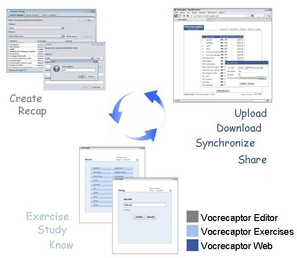

|
|
Vocrecaptor on twitter Vocrecaptor discussion group |
  |
|
What is Vocrecaptor? Project Vocrecaptor includes several applications and services serving the common purpose - provide a help in learning foreign languages by improving a vocabulary. Currently projects consists of 3 sub-projects:
Vocrecaptor EditorLet's assume you are reading a book on a language you are studying (for example english) or you are making a home assignment for your english language courses and you don't want to miss any single word you've met for the first time and you want to learn it. Of course, you can write it out in special notebook but it can be done much easier with Vocrecaptor Editor.Vocrecaptor Editor is a desktop application written in Java, works on all platforms and requires Java Runtime Environment (JRE) 6 or later. Working with Vocrecaptor Editor Download Vocrecaptor Editor version 1.2.2 Vocrecaptor WebVocrecaptor Web is a web-site where you can upload your dictionaries created in Vocrecaptor Editor to (or sample dictionaries) and have access from different places. Vocrecaptor Web allows you to do exercises, view statistics, share you personal dictionaries with other people.Visit Vocrecaptor Web site Vocrecaptor ExercisesVocrecaptor Exercises is a JavaFX application that allows you to do exercises on dictionaries created in Vocrecaptor Editor and uploaded to Vocrecaptor Web site. By its JavaFX nature application can be used as a web-browser applet, desktop application or from some mobile devices supporting JavaFX technology.Go to exercises Working with Vocrecaptor Exercises Vocrecaptor is created using:


|
Exercises: 
Downloads:sampledictionaries_en-ru.zip vocrecaptoreditor-v1.2.2.jarAll downloads Updates:October 8, 2009
|
| Alexey Peskov, 2007-2009 | |
{kind=link}